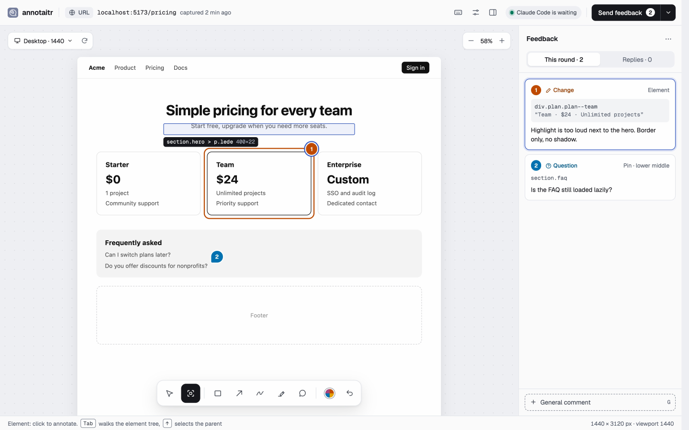
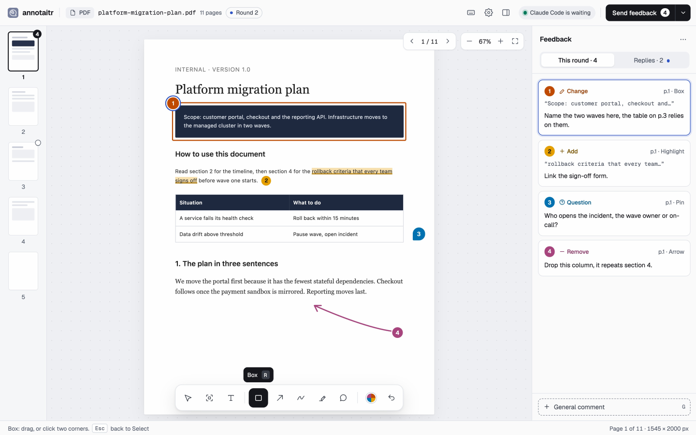
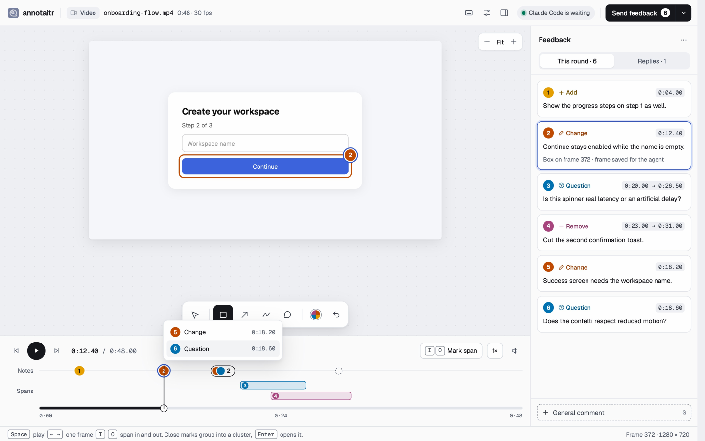
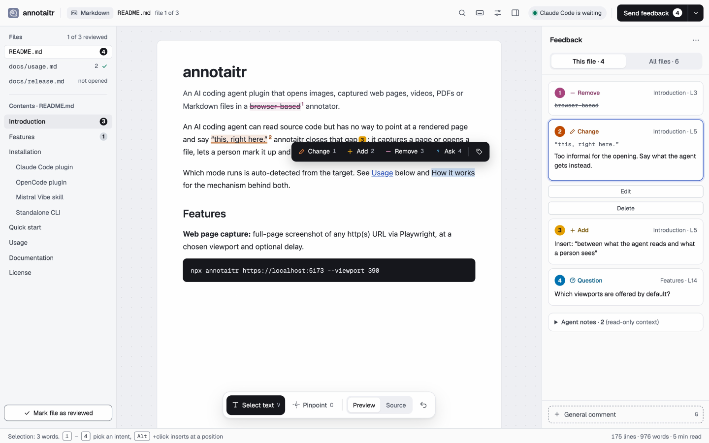
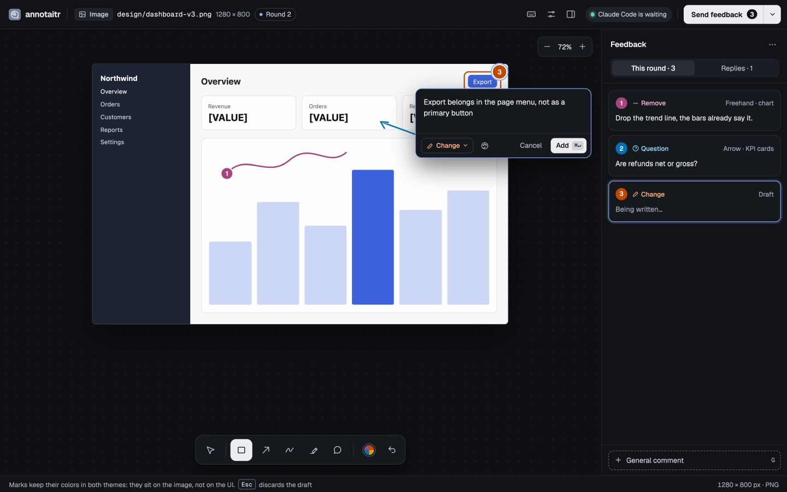

Web pages
Capture any URL at a chosen viewport. The Element tool picks a part of the page straight off the screenshot, and the feedback names the element so the agent finds it in the source.
annotaitr opens an image, a web page, a video, a PDF or a Markdown file in your browser. You mark it up. The agent receives numbered, structured feedback it can act on, instead of pixel coordinates and line numbers you typed by hand.

Saying "this, right here" is easy for you and impossible for a model. annotaitr closes that gap in three steps.
When the agent has something for you to judge, it calls annotaitr. Your browser opens with the screenshot, page, recording, PDF or document.
Draw boxes and arrows, drop pins, select text, or pick an element straight off a captured page. Add a comment where it helps.
The agent gets each note with its number, intent and position, and reopens the annotator for another round until you approve.
Draw a box, ask a question. Each mark becomes a numbered note, and each note becomes a line in the agent's feedback.
Four intents, each with its own colour, icon and word, so the meaning survives colour blindness and a quick glance. The agent receives the intent with every note.
This is wrong or off. Rework it.
Something is missing here.
Take this out.
Explain this before I decide.
The mode is detected from what you open. Tools, notes and the decision work the same way in all of them.

Capture any URL at a chosen viewport. The Element tool picks a part of the page straight off the screenshot, and the feedback names the element so the agent finds it in the source.

Annotate a screen recording as single moments or spans. The agent gets each annotated frame, a strip per span and an overview.

Select text to change, add, remove or ask. Review several files in one session, with a Files overview that shows what you have read. Mermaid, PlantUML and math are annotatable as a whole.

Boxes, arrows, freehand, highlighter and numbered pins on a screenshot, the clipboard or a PDF page. Light and dark theme, with marks that stay readable on any image.
Your notes arrive as text, each with its number, intent and a plain-language position. The marked-up image is saved next to it, so the agent can match both.
Approve with nothing to change, or approve with notes that are only context. The agent knows the difference.
2 annotations (1 Change, 1 Question) on the screenshot. ### 1. [#a3f19c2e] Change · Boxed area: top left Make the title shorter. ### 3. [#7b210e44] Question · Comment pin: bottom right Are refunds net or gross?
Needs Node.js 22.13 or newer. Web page capture also needs a Chromium build for Playwright: npx playwright install chromium.
annotaitr serves its UI from localhost and prints your decision to the terminal that started it. Its fonts are bundled, there is no tracking and no account.